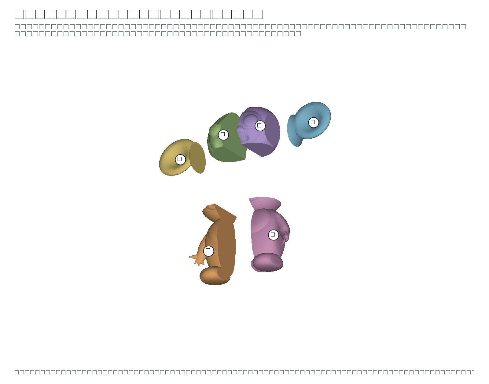
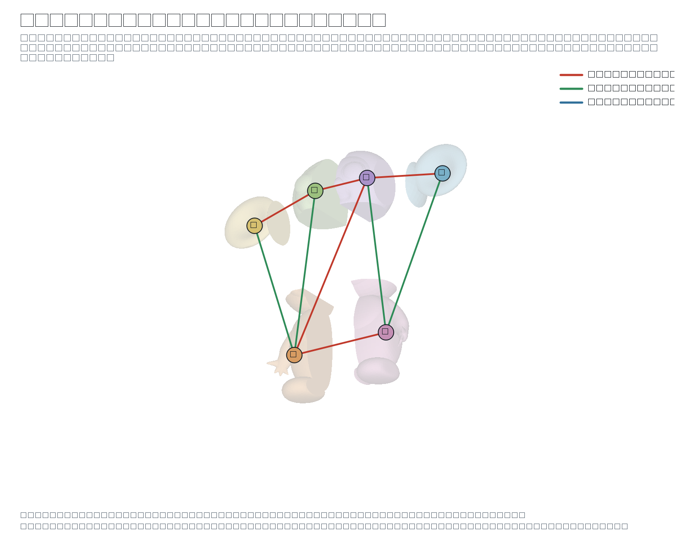
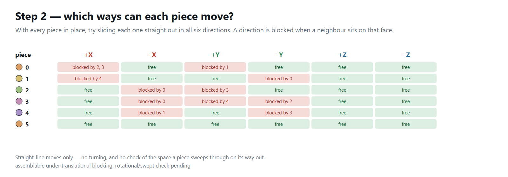
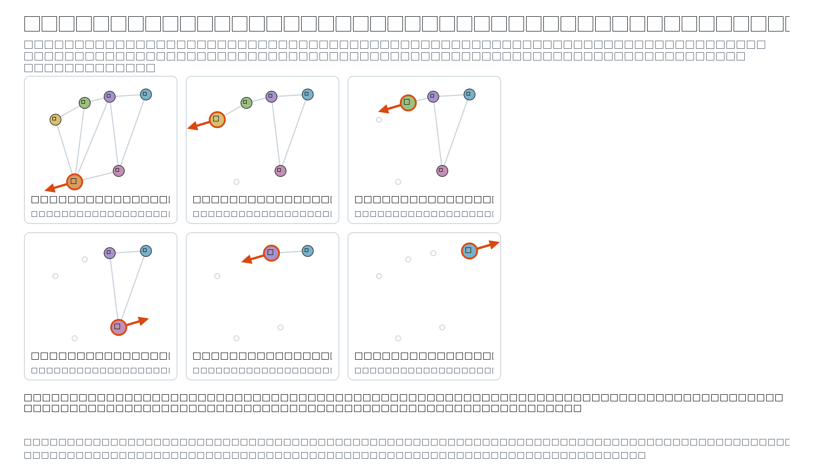

cheburashka
Division report · 2026-09-22 16:08
The model
| Vertices | 6,669 |
|---|
| Triangles | 13,334 |
|---|
| Bounding box | 0.9 × 0.8415 × 0.3234 |
|---|
| Watertight | yes |
|---|
| Volume (divergence) | 0.0543816 |
|---|
| Volume (voxel fill) | 0.0543989 · 100% of the divergence volume |
|---|
Two independent measures. The divergence integral counts every shell it is given, so a mesh with interior geometry reads high; the voxel fill uses parity down each column and reports what is actually solid. Them disagreeing is a fact about the model, not about the division.
The division
| Mode | Random |
|---|
| Divided | V-rep (bounding cage) |
|---|
| Pieces asked for | 6 |
|---|
| Cells produced | 6 |
|---|
| Pieces kept | 6 |
|---|
| Seed | 7 |
|---|
| Voxel grid | 96 × 90 × 34 = 293,760 voxels, 65,249 filled (22.2%), side 0.009375 |
|---|
| Trim (Elber §5) | 6 trimmed to the model, 0 empty cell(s) dropped, 0 failed |
|---|
Time
| Voxelise the model | 110 ms |
|---|
| Choose the cuts | 2,160 ms |
|---|
| Extract the pieces | 1 ms |
|---|
| Trim to the model | 3,874 ms |
|---|
| Cut the joints | — |
|---|
| Draw the planner pictures | 844 ms |
|---|
| Total | 5,079 ms |
|---|
The pieces
| Count | 6 |
|---|
| Triangles, all pieces | 15,632 |
|---|
| Largest / smallest side | 0.5388 / 0.2801 · spread 1.92× |
|---|
| Volume, all pieces | 0.0543808 · 100% of the model |
|---|
| # | origin X | origin Y | origin Z | size X | size Y | size Z | triangles | volume | % of model | closed |
|---|
| 0 | 0.2149 | 0.08299 | 0.3572 | 0.2728 | 0.5388 | 0.268 | 3,950 | 0.013024 | 23.9 | yes |
| 1 | 0.05 | 0.6218 | 0.3848 | 0.2801 | 0.2593 | 0.1912 | 2,012 | 0.0031233 | 5.74 | yes |
| 2 | 0.3301 | 0.6218 | 0.3383 | 0.1576 | 0.2989 | 0.3227 | 1,596 | 0.010237 | 18.8 | yes |
| 3 | 0.4877 | 0.07923 | 0.3665 | 0.2508 | 0.5205 | 0.2671 | 4,260 | 0.013746 | 25.3 | yes |
| 4 | 0.4877 | 0.5997 | 0.3383 | 0.1581 | 0.321 | 0.3234 | 1,766 | 0.010974 | 20.2 | yes |
| 5 | 0.6458 | 0.6098 | 0.3784 | 0.3042 | 0.2719 | 0.1863 | 2,048 | 0.0032769 | 6.03 | yes |
The assembly planner
| Shared faces | 9 |
|---|
| Neighbours per piece | 2 to 4 |
|---|
| Order found | yes |
|---|
| Assembly order | 5 (-X) → 4 (+X) → 3 (-X) → 2 (+X) → 1 (+X) → 0 (+X) |
|---|
assemblable under translational blocking; rotational/swept check pending
A division into boxes always has some piece free to leave, so a successful order here is expected and carries little information. The test starts to bite once joints restrict how pieces may move, or once a swept-volume check replaces straight-line blocking.
The planner, drawn

The pieces, pulled apart, numbered with the ids the planner uses.

Step 1 — every line joins two pieces that share a face, coloured by the axis that face is perpendicular to.

Step 2 — for each piece, which of the six straight moves are blocked, and by which neighbour.

Step 3 — the pieces taken off one at a time; reversed, this is the assembly order.